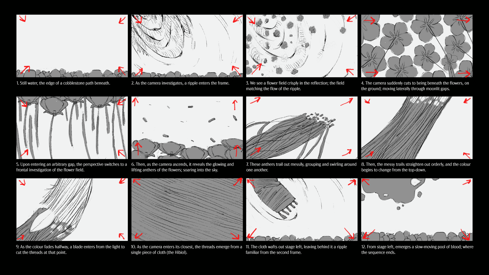

Final Credit Sequence
Early Storyboard
Nostos
Role: Motion Design, Art Direction, Color, Illustration
Year: 2022
Idea
Nostos is Greek for, "a feeling of longing to return to a place that doesn't exist anymore." The popular animated film "Maquia: When the Promised Flower Blooms" is the story of Maquia, a girl torn from her home and unable to age. Given the film is heavily stylized, the challenge was to create an original homage laced with nostalgia.
Approach
Flowers and water are consistent motifs for emotion and transition throughout the film. Time passes as usual for everyone but Maquia. Early in the research, I had ambition to transition the flowers into the main symbol in the film, Hibiol. A cloth made by Maquia's tribe, documenting history with every thread. A transition to foreshadow the future, as Maquia remained physically the same—yet changed by her experiences.
Delivery
Given the heavy stylization of the film, the decision to use 3D and a duotone color system became clear. Additionally, keeping the rendering noise strangely added to the nostalgic quality of the piece. (Or my pain to render the film.) In the end, the mere petal becomes a garden—those around Maquia live, grow, and die. Yet there is growth in this nostalgia.